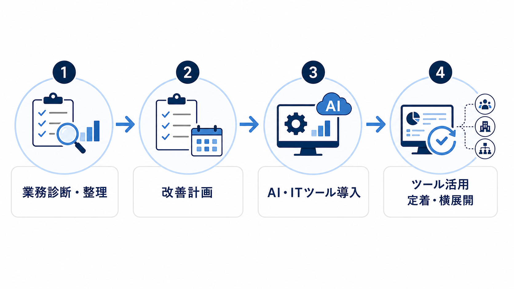

文書作成
報告書や社内文書などの下書き作成、確認手順の整理。
文書作成・情報整理・定型業務などを見直し、より効率的に進められる形に整えます。

報告書や社内文書などの下書き作成、確認手順の整理。
複数の資料やメモを扱いやすくまとめ、確認しやすくする流れづくり。
繰り返し作業の手順を整理し、より効率的な形に整える支援。
どの業務でAI・ITツールを活用できそうかを整理。
AIやツールを使う際の確認方法・運用ルールを整備。
勤怠・申請等に関連するITツールの導入や運用整理。
現在のお困りごとや業務状況を伺い、見直せそうな点を整理します。
対象業務の流れや課題を整理し、改善の方向性を明確にします。
AI・ITツールの導入・活用方法や業務の流れ、確認手順、運用ルールなどを整えます。
導入後の運用状況を確認しながら、改善の継続や他業務への展開を支援します。
いきなり大きく変えるのではなく、まずは1つの業務から小さく始め、状況に応じて他の業務へ広げます。
現状の業務を起点に、効率化や運用しやすい形につながる使い方を整理します。
取り組みやすい範囲から始め、無理なく続けられる形を着実に整えます。
AIの出力をそのまま使うのではなく、確認しやすい手順を整えます。
日々の作業に取り入れやすい手順で、運用しやすく整えます。
いいえ。AI活用・業務改善支援事業は、業務整理・設計・導入・運用定着を中心に支援します。
まずは1業務を対象に、無理なく取り組める改善から始めることをおすすめします。
AIは下書きや整理の補助に使い、最終確認・判断は人が行う前提で設計します。
日々の業務の中から、見直しやすい作業や、AI・ITツールを活用できそうな場面を整理します。まずは小さな範囲から、無理なく続けられる形を考えます。